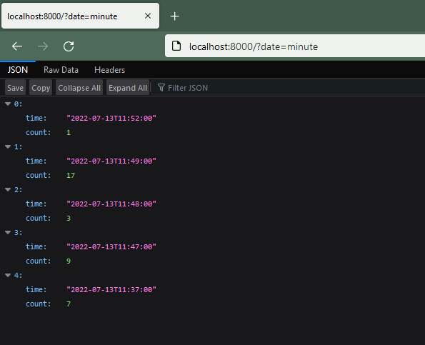

Django Trunc(kind)和Extract(lookup_name)函数SQL注入漏洞（CVE-2022-34265）¶
Django是一个高级的Python Web框架，支持快速开发和简洁实用的设计。
Django在2022年7月4日发布了安全更新，修复了在数据库函数Trunc()和Extract()中存在的SQL注入漏洞。该漏洞影响Django 4.0.6和3.2.14之前的版本。
参考链接：
- https://www.djangoproject.com/weblog/2022/jul/04/security-releases/
- https://github.com/django/django/commit/0dc9c016fadb71a067e5a42be30164e3f96c0492
环境搭建¶
执行如下命令启动一个存在漏洞的Django 4.0.5服务器：
docker compose up -d
环境启动后，访问http://your-ip:8000即可看到Web页面。
漏洞复现¶
该Web应用使用Trunc函数来按照日期时间聚合页面点击次数。访问http://your-ip:8000/?date=minute可以查看每分钟的点击次数：

要利用SQL注入漏洞，修改date参数为恶意输入：
http://your-ip:8000/?date=xxxx'xxxx
SQL错误信息将会显示，证实注入成功：